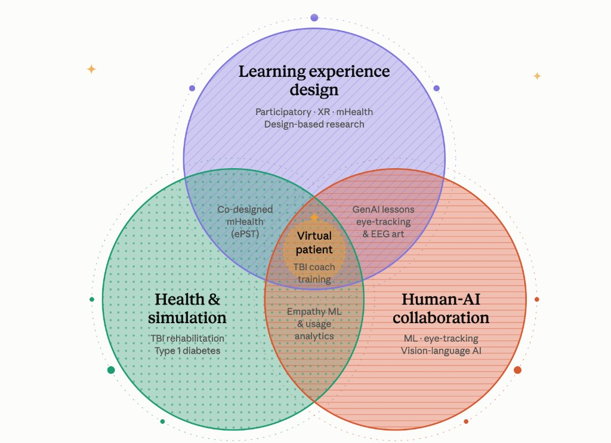

Research & Publications

Dissertation: Designing an AI-Powered Empathy-Driven Virtual Patient for Traumatic Brain Injury Coach Training
My dissertation investigates the design and formative evaluation of an AI-powered virtual patient environment for rehabilitation coaches learning to implement problem-solving training with adults with traumatic brain injury.
The project examines how authentic patient perspectives, empathy-centered design, conversational AI, and instructional scaffolding can be integrated into a virtual simulation that allows coaches to practice communication and problem-solving strategies in a safe and repeatable environment.
Examining virtual patient simulation for rehabilitation and healthcare training, with particular attention to system characteristics, interaction design, and empathy-related outcomes.
Using learner-centered and participatory design approaches to translate stakeholder experiences into personas, learning scenarios, system requirements, and an AI-powered virtual patient prototype.
Investigating rehabilitation coaches' learning experiences, perceived usability, interaction with virtual patients, and opportunities for further refinement.
Publications
Published Journal Articles
Juengst, S. B., Schmidt, M., Weng, Y., Holland, A., Bogaards, J. A., Kinney, A. R., Wade, S., Lang, K., Pappadis, M. R., Sutter, S., Tobia, S., Williams, M., & Wilmoth, K. (In Press). Electronic problem-solving training (ePST) after traumatic brain injury: Pilot study of three delivery modalities. Rehabilitation Psychology.
Schmidt, M., Weng, Y., Juengst, S., & Holland, A. (2026). Community-based participatory research to inform the design of electronic problem-solving training for individuals with traumatic brain injury. Journal of Medical Internet Research. https://doi.org/10.2196/83995
Schmidt, M., Lu, J., Glaser, N., Curtis, M., Li, S., Weng, Y., & Huang, R. (2025). Aligning XR research with autistic priorities and lived experiences: Insights from the Project PHoENIX study. Journal of Autism and Developmental Disorders. https://doi.org/10.1007/s10803-025-07023-3
Weng, Y., Schmidt, M., Huang, W., & Hao, Y. (2024). The effectiveness of immersive technology in K-12 English as second language learning: A systematic review. ReCALL. https://doi.org/10.1017/S0958344024000041
Schmidt, M. M., Lee, M., Francois, M.-S., Lu, J., Huang, R., & Weng, Y. (2023). Learning experience design of project PHoENIX: Addressing the lack of autistic representation in extended reality design and development. Journal of Formative Design in Learning. https://doi.org/10.1007/s41686-023-00077-5
Schmidt, M., Lu, J., Luo, W., Cheng, L., Lee, M., Huang, R., Weng, Y., Kichler, J. C., Corathers, S. D., Jacobsen, L. M., Albanese-O’Neill, A., Smith, L., Westen, S., Gutierrez-Colina, A. M., Heckaman, L., Wetter, S. E., Driscoll, K. A., & Modi, A. (2022). Learning experience design of an mHealth self-management intervention for adolescents with type 1 diabetes. Educational Technology Research and Development, 70(6), 2171–2209. https://doi.org/10.1007/s11423-022-10160-6
Book Chapter
Schmidt, M., Lu, J., Glaser, N., Li, S., & Weng, Y. (2025). Preliminary report: Innovations in participatory immersive XR research for transition-aged autistic adults. In J. M. Krüger et al. (Eds.), Immersive Learning Research Network. iLRN 2024 (Communications in Computer and Information Science, Vol. 2271, pp. 249–260). Springer. https://doi.org/10.1007/978-3-031-80475-5_18
Conference Proceeding
Juengst, S. B., Schmidt, M., & Weng, Y. (2026). Feasibility of eHealth problem-solving training (ePST) for traumatic brain injury. In eTELEMED 2026: The Eighteenth International Conference on eHealth, Telemedicine, and Social Medicine (pp. 1–3). IARIA. https://www.thinkmind.org/library/eTELEMED/eTELEMED_2026/etelemed_2026_1_10_40013.html
Weng, Y., Schmidt, M., & Juengst, S. (2026). Revealing Engagement Patterns in Electronic Problem-Solving Training for Individuals With Traumatic Brain Injury Through Learning Analytics. 103rd ACRM Annual Fall Conference & Expo, Washington, DC, United States. (In Press)
Weng, Y., Deng, K., Dou, F., Yuan, G., & Lu, J. (2026). MoCE: Mixture of Communitified Experts for Continual Vision-Language Learning under Task-Complexity Flux. The International Conference on Learning Representations (ICLR). (Submitted)
Weng, Y., Dou, F., Sun, J., & Lu, J. (2026). Learning to Grow Experts: Dynamic Tree Mixture-of-Experts for Anchor-Based 3D Gaussian Scene Reconstruction. Computer Vision and Pattern Recognition (CVPR). (To be submitted)
Chan, L., Weng, Y., Lu, J. (2026). Anchor Takeover: Why Chart Vision Language Models Verify the Answer instead of the Evidence. The 64th Annual Meeting of the Association for Computational Linguistics. (In progress)